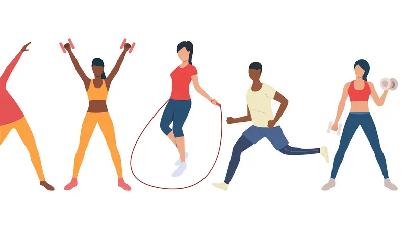

5 Olahraga Yang Gak Populer di Indonesia
Sebagai negara yang kaya akan jumlah penduduk, Indonesia sudah melahirkan sejumlah atlet yang menjadi juara di kompetisi-kompetisi level dunia.
Baca Selengkapnya ...Berolahraga di Pagi hari, Ini Manfaatnya
Sebagian besar orang umumnya memilih untuk berolahraga di pagi hari atau sore hari. Namun, beberapa orang meyakini kalau waktu terbaik untuk berolahraga sebenarnya adalah di pagi hari.
Baca Selengkapnya ...

Macam-macam Olahraga Kardio Yang Mudah dilakukan dirumah
Kardio merupakan satu di antara jenis olahraga yang berguna untuk kesehatan tubuh. Bagi yang belum tahu, kardio adalah jenis olahraga yang memperkuat sistem kardiovaskular (pembuluh darah dan jantung, serta paru-paru).
Baca Selengkapnya ...